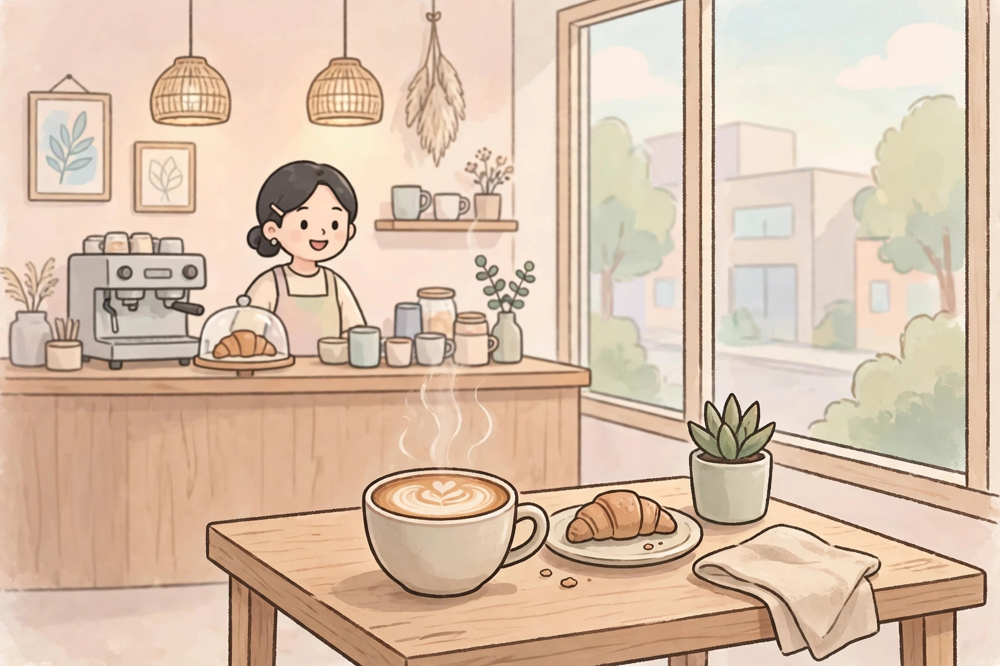

咖啡店點餐
안녕하세요. 주문하시겠어요?
在咖啡店點一杯熱拿鐵，學會點餐、問價錢和外帶的說法。

안녕하세요. 주문하시겠어요?
네, 따뜻한 카페 라테 한 잔 주세요.
사이즈는 어떻게 하시겠어요?
작은 사이즈로 주세요. 얼마예요?
5,000원입니다.
카드로 계산할게요. 감사합니다.
드시고 가세요, 아니면 가져가세요?
포장해 주세요.
네, 알겠습니다.
還沒播放，點上面的大按鈕開始。
慢速女聲朗讀，先聽一遍，再一句一句跟讀。如果大按鈕點了還是沒聲音，請點直接打開音頻，或點下面的備用朗讀。
逐句翻譯
- 你好。請問您要點餐嗎？
- 是的，請給我一杯熱拿鐵。
- 尺寸您要哪一種呢？
- 請給我小杯的。多少錢？
- 是 5,000 韓元。
- 我用卡結帳。謝謝。
- 是內用，還是外帶？
- 請幫我打包。
- 好的，知道了。
文法講解
1. -아/어 주세요：請……
是什麼：向別人提出請求的禮貌說法。句型：動詞詞幹 + 아/어 주세요。短文例句：작은 사이즈로 주세요、포장해 주세요。再舉一例：물 한 잔 주세요（請給我一杯水）。容易錯：주세요 本身已經是禮貌形，後面不用再加 요。
2. -(으)로：用……、以……的方式
是什麼：表示方法、工具或方式。句型：名詞 + (으)로。短文例句：카드로 계산할게요（我用卡結帳）。再舉一例：현금으로 낼게요（我用現金付）。容易錯：不要和賓語標記 을/를 混淆。
3. -(으)시겠어요?：您要……嗎？
是什麼：對客人、長輩用尊敬語詢問意願。句型：動詞詞幹 + (으)시겠어요?。短文例句：주문하시겠어요?（您要點餐嗎？）再舉一例：더 필요하시겠어요?（您還需要別的嗎？）容易錯：這是問對方，說自己時不用 시。
常用詞彙
- 따뜻하다 溫的、熱的 —— 따뜻한 카페 라테（熱拿鐵）
- 주문하다 點餐 —— 주문하시겠어요?（您要點餐嗎？）
- 사이즈 尺寸 —— 작은 사이즈（小杯）
- 얼마 多少錢 —— 얼마예요?（多少錢？）
- 카드 卡 —— 카드로 계산할게요（我用卡結帳）
- 계산하다 結帳 —— 계산할게요（我來結帳）
- 포장하다 打包 —— 포장해 주세요（請幫我打包）
- 가져가다 帶走 —— 가져가세요?（外帶嗎？）
留給你的問題
당신은 따뜻한 커피를 좋아해요, 아니면 아이스 커피를 좋아해요?